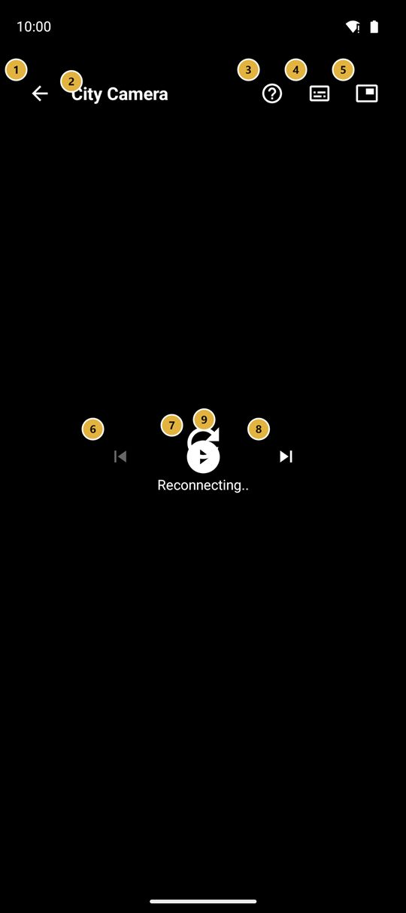

Video player
What this is for
Watch a video stream or a camera in full screen. The controls show when you tap the picture and hide by themselves after a few seconds.

In this order
- Tap the picture to show the controls.
- Press play or pause 7 to stop and start the stream.
- Move to the neighbouring video channel with Previous 6 and Next 8.
- Open Audio & Subtitles 4 to choose a language or switch subtitles.
- Use picture-in-picture 5 to keep watching in a small window while you use another app. Close 1 returns to the channel list.
The elements
1CloseLeaves the player.
Stops the stream and returns to the screen you came from. The Back button of the phone does the same.
- Undo
- Open the channel again from the list.
2Channel titleThe name of the channel.
The title you see in the channel list.
3HelpOpens this page.
The stream pauses while the page is open. Back returns to the picture; press play to go on.
- Shortcut
- F1
4Audio & SubtitlesChooses the audio language and the subtitles.
Lists the audio tracks and subtitle tracks the stream offers, with Off for subtitles. A stream that offers only one track has nothing to choose. The choice is remembered for this channel.
- Undo
- Choose the previous track, or Off.
5Picture-in-pictureMoves the picture to a small window.
The window stays above other apps while you do something else. Where the phone cannot do it, the app says so.
- Undo
- Open the small window to return to full screen.
6Previous channelThe channel before this one.
Moves along your video channels. The button is dimmed on the first channel.
7PlayPauses and resumes the stream.
Pauses the picture and the sound; the same button resumes them.
8Next channelThe channel after this one.
Moves along your video channels. The button is dimmed on the last channel.
9Buffering and reconnectingShows that the stream is being reached.
A spinner with the words Buffering or Reconnecting appears while the app waits for data or tries the stream again. The app retries by itself; if the stream stays silent, go back and try another channel.